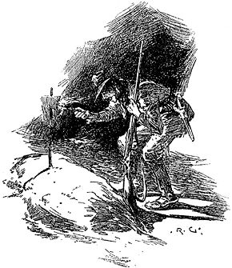

All night their course lay through intricate defiles and over irregular and rock-strewn paths. More than once they lost their way, but Hope's intimate knowledge of the mountains enabled them to regain the track once more. When morning broke, a scene of marvellous though savage beauty lay before them. In every direction the great snow-capped peaks hemmed them in, peeping over each other's shoulders to the far horizon. So steep were the rocky banks on either side of them that the larch and the pine seemed to be suspended over their heads, and to need only a gust of wind to come hurtling down upon them. Nor was the fear entirely an illusion, for the barren valley was thickly strewn with trees and boulders which had fallen in a similar manner. Even as they passed, a great rock came thundering down with a hoarse rattle which woke the echoes in the silent gorges, and startled the weary horses into a gallop.
As the sun rose slowly above the eastern horizon, the caps of the great mountains lit up one after the other, like lamps at a festival, until they were all ruddy and glowing. The magnificent spectacle cheered the hearts of the three fugitives and gave them fresh energy. At a wild torrent which swept out of a ravine they called a halt and watered their horses, while they partook of a hasty breakfast. Lucy and her father would fain have rested longer, but Jefferson Hope was inexorable. "They will be upon our track by this time," he said. "Everything depends upon our speed. Once safe in Carson, we may rest for the remainder of our lives."
During the whole of that day they struggled on through the defiles, and by evening they calculated that they were more than thirty miles from their enemies. At night-time they chose the base of a beetling crag, where the rocks offered some protection from the chill wind, and there, huddled together for warmth, they enjoyed a few hours' sleep. Before daybreak, however, they were up and on their way once more. They had seen no sign of any pursuers, and Jefferson Hope began to think that they were fairly out of the reach of the terrible organization whose enmity they had incurred. He little knew how far that iron grasp could reach, or how soon it was to close upon them and crush them.
About the middle of the second day of their flight their scanty store of provisions began to run out. This gave the hunter little uneasiness, however, for there was game to be had among the mountains, and he had frequently before had to depend upon his rifle for the needs of life. Choosing a sheltered nook, he piled together a few dried branches and made a blazing fire, at which his companions might warm themselves, for they were now nearly five thousand feet above the sea level, and the air was bitter and keen. Having tethered the horses, and bade Lucy adieu, he threw his gun over his shoulder, and set out in search of whatever chance might throw in his way. Looking back, he saw the old man and the young girl crouching over the blazing fire, while the three animals stood motionless in the background. Then the intervening rocks hid them from his view.
He walked for a couple of miles through one ravine after another without success, though, from the marks upon the bark of the trees, and other indications, he judged that there were numerous bears in the vicinity. At last, after two or three hours' fruitless search, he was thinking of turning back in despair, when casting his eyes upwards he saw a sight which sent a thrill of pleasure through his heart. On the edge of a jutting pinnacle, three or four hundred feet above him, there stood a creature somewhat resembling a sheep in appearance, but armed with a pair of gigantic horns. The big-horn—for so it is called—was acting, probably, as a guardian over a flock which were invisible to the hunter; but fortunately it was heading in the opposite direction, and had not perceived him. Lying on his face, he rested his rifle upon a rock, and took a long and steady aim before drawing the trigger. The animal sprang into the air, tottered for a moment upon the edge of the precipice, and then came crashing down into the valley beneath.
The creature was too unwieldy to lift, so the hunter contented himself with cutting away one haunch and part of the flank. With this trophy over his shoulder he hastened to retrace his steps, for the evening was already drawing in. He had hardly started, however, before he realized the difficulty which faced him. In his eagerness he had wandered far past ravines which were known to him, and it was no easy matter to pick out the path which he had taken. The valley in which he found himself divided and sub-divided into many gorges, which were so like each other that it was impossible to distinguish one from the other. He followed one for a mile or more until he came to a mountain torrent which he was sure he had never seen before. Convinced that he had taken the wrong turn, he tried another, but with the same result. Night was coming on rapidly, and it was almost dark before he at last found himself in a defile which was familiar to him. Even then it was no easy matter to keep to the right track, for the moon had not yet risen, and the high cliffs on either side made the obscurity more profound. Weighed down with his burden, and weary from his exertions, he stumbled along, keeping up his heart by the reflection that every step brought him nearer to Lucy, and that he carried with him enough to ensure them food for the remainder of their journey.
He had now come to the mouth of the very defile in which he had left them. Even in the darkness he could recognize the outline of the cliffs which bounded it. They must, he reflected, be awaiting him anxiously, for he had been absent nearly five hours. In the gladness of his heart he put his hands to his mouth and made the glen re-echo to a loud halloo as a signal that he was coming. He paused and listened for an answer. None came save his own cry, which clattered up the dreary silent ravines, and was borne back to his ears in countless repetitions. Again he shouted, even louder than before, and again no whisper came back from his friends whom he had left such a short time ago. A vague, nameless dread came over him, and he hurried onwards frantically, dropping the precious food in his agitation.
When he turned the corner, he came full in sight of the spot where the fire had been lit. There was still a glowing pile of wood ashes there, but it had evidently not been tended since his departure. The same dead silence still reigned all round. With his fears all changed to convictions, he hurried on. There was no living creature near the remains of the fire: animals, man, maiden, all were gone. It was only too clear that some sudden and terrible disaster had occurred during his absence—a disaster which had embraced them all, and yet had left no traces behind it.
Bewildered and stunned by this blow, Jefferson Hope felt his head spin round, and had to lean upon his rifle to save himself from falling. He was essentially a man of action, however, and speedily recovered from his temporary impotence. Seizing a half-consumed piece of wood from the smouldering fire, he blew it into a flame, and proceeded with its help to examine the little camp. The ground was all stamped down by the feet of horses, showing that a large party of mounted men had overtaken the fugitives, and the direction of their tracks proved that they had afterwards turned back to Salt Lake City. Had they carried back both of his companions with them? Jefferson Hope had almost persuaded himself that they must have done so, when his eye fell upon an object which made every nerve of his body tingle within him. A little way on one side of the camp was a low-lying heap of reddish soil, which had assuredly not been there before. There was no mistaking it for anything but a newly-dug grave. As the young hunter approached it, he perceived that a stick had been planted on it, with a sheet of paper stuck in the cleft fork of it. The inscription upon the paper was brief, but to the point:—
JOHN FERRIER,
Formerly of Salt Lake City,
Died August 4th, 1860.
The sturdy old man whom he had left so short a time before, was gone, then, and this was all his epitaph. Jefferson Hope looked wildly round to see if there was a second grave, but there was no sign of one. Lucy had been carried back by their terrible pursuers to fulfil her original destiny, by becoming one of the harem of the Elder's son. As the young fellow realized the certainty of her fate, and his own powerlessness to prevent it, he wished that he, too, was lying with the old farmer in his last silent resting-place.
Again, however, his active spirit shook off the lethargy which springs from despair. If there was nothing else left to him, he could at least devote his life to revenge. With indomitable patience and perseverance, Jefferson Hope possessed also a power of sustained vindictiveness, which he may have learned from the Indians amongst whom he had lived. As he stood by the desolate fire, he felt that the only one thing which could assuage his grief would be thorough and complete retribution, brought by his own hand upon his enemies. His strong will and untiring energy should, he determined, be devoted to that one end. With a grim, white face, he retraced his steps to where he had dropped the food, and having stirred up the smouldering fire, he cooked enough to last him for a few days. This he made up into a bundle, and, tired as he was, he set himself to walk back through the mountains upon the track of the avenging angels.
For five days he toiled footsore and weary through the defiles which he had already traversed on horseback. At night he flung himself down among the rocks, and snatched a few hours of sleep; but before daybreak he was always well on his way. On the sixth day, he reached the Eagle Cañon, from which they had commenced their ill-fated flight. Thence he could look down upon the home of the saints. Worn and exhausted, he leaned upon his rifle and shook his gaunt hand fiercely at the silent widespread city beneath him. As he looked at it, he observed that there were flags in some of the principal streets, and other signs of festivity. He was still speculating as to what this might mean when he heard the clatter of horse's hoofs, and saw a mounted man riding towards him. As he approached, he recognized him as a Mormon named Cowper, to whom he had rendered services at different times. He therefore accosted him when he got up to him, with the object of finding out what Lucy Ferrier's fate had been.
"I am Jefferson Hope," he said. "You remember me."
The Mormon looked at him with undisguised astonishment—indeed, it was difficult to recognize in this tattered, unkempt wanderer, with ghastly white face and fierce, wild eyes, the spruce young hunter of former days. Having, however, at last satisfied himself as to his identity, the man's surprise changed to consternation.
"You are mad to come here," he cried. "It is as much as my own life is worth to be seen talking with you. There is a warrant against you from the Holy Four for assisting the Ferriers away."
"I don't fear them, or their warrant," Hope said earnestly. "You must know something of this matter, Cowper. I conjure you by everything you hold dear to answer a few questions. We have always been friends. For God's sake, don't refuse to answer me."
"What is it?" the Mormon asked uneasily. "Be quick. The very rocks have ears and the trees eyes."
"What has become of Lucy Ferrier?"
"She was married yesterday to young Drebber. Hold up man, hold up; you have no life left in you."
"Dont mind me," said Hope faintly. He was white to the very lips, and had sunk down on the stone against which he had been leaning. "Married, you say?"
"Married yesterday—that's what those flags are for on the Endowment House. There was some words between young Drebber and young Stangerson as to which was to have her. They'd both been in the party that followed them, and Stangerson had shot her father, which seemed to give him the best claim; but when they argued it out in council, Drebber's party was the stronger, so the Prophet gave her over to him. No one won't have her very long though, for I saw death in her face yesterday. She is more like a ghost than a woman. Are you off, then?"
"Yes, I am off," said Jefferson Hope, who had risen from his seat. His face might have been chiselled out of marble, so hard and set was its expression, while its eyes glowed with a baleful light.
"Where are you going?"
"Never mind," he answered; and, slinging his weapon over his shoulder, strode off down the gorge and so away into the heart of the mountains to the haunts of the wild beasts. Amongst them all there was none so fierce and so dangerous as himself.
The prediction of the Mormon was only too well fulfilled. Whether it was the terrible death of her father or the effects of the hateful marriage into which she had been forced, poor Lucy never held up her head again, but pined away and died within a month. Her sottish husband, who had married her principally for the sake of John Ferrier's property, did not affect any great grief at his bereavement; but his other wives mourned over her, and sat up with her the night before the burial, as is the Mormon custom. They were grouped round the bier in the early hours of the morning, when, to their inexpressible fear and astonishment, the door was flung open, and a savage-looking weather-beaten man in tattered garments strode into the room. Without a glance or a word to the cowering women, he walked up to the white silent figure which had once contained the pure soul of Lucy Ferrier. Stooping over her, he pressed his lips reverently to her cold forehead, and then, snatching up her hand, he took the wedding-ring from her finger. "She shall not be buried in that," he cried with a fierce snarl, and before an alarm could be raised sprang down the stairs and was gone. So strange and so brief was the episode that the watchers might have found it hard to believe it themselves or persuade other people of it, had it not been for the undeniable fact that the circlet of gold which marked her as having been a bride had disappeared.
For some months Jefferson Hope lingered among the mountains, leading a strange, wild life, and nursing in his heart the fierce desire for vengeance which possessed him. Tales were told in the city of the wierd figure which was seen prowling about the suburbs, and which haunted the lonely mountain gorges. Once a bullet whistled through Stangerson's window and flattened itself upon the wall within a foot of him. On another occasion, as Drebber passed under a cliff a great boulder crashed down on him, and he only escaped a terrible death by throwing himself upon his face. The two young Mormons were not long in discovering the reason of these attempts upon their lives, and led repeated expeditions into the mountains in the hope of capturing or killing their enemy, but always without success. Then they adopted the precaution of never going out alone or after night-fall, and of having their houses guarded. After a time they were able to relax these measures, for nothing was either heard or seen of their opponent, and they hoped that time had cooled his vindictiveness.
Far from doing so, it had, if anything, augmented it. The hunter's mind was of a hard, unyielding nature, and the predominant idea of revenge had taken such complete possession of it that there was no room for any other emotion. He was, however, above all things, practical. He soon realized that even his iron constitution could not stand the incessant strain which he was putting upon it. Exposure and want of wholesome food were wearing him out. If he died like a dog among the mountains, what was to become of his revenge then? And yet such a death was sure to overtake him if he persisted. He felt that that was to play his enemy's game, so he reluctantly returned to the old Nevada mines, there to recruit his health and to amass money enough to allow him to pursue his object without privation.
His intention had been to be absent a year at the most, but a combination of unforeseen circumstances prevented his leaving the mines for nearly five. At the end of that time, however, his memory of his wrongs and his craving for revenge were quite as keen as on that memorable night when he had stood by John Ferrier's grave. Disguised, and under an assumed name, he returned to Salt Lake City, careless what became of his own life, as long as he obtained what he knew to be justice. There he found evil tidings awaiting him. There had been a schism among the Chosen People a few months before, some of the younger members of the Church having rebelled against the authority of the Elders, and the result had been the secession of a certain number of the malcontents, who had left Utah and become Gentiles. Among these had been Drebber and Stangerson; and no one knew whither they had gone. Rumour reported that Drebber had managed to convert a large part of his property into money, and that he had departed a wealthy man, while his companion Stangerson, was comparitively poor. There was no clue at all, however, as to their whereabouts.
Many a man, however vindictive, would have abandoned all thought of revenge in the face of such a difficulty, but Jefferson Hope never faltered for a moment. With the small competence he possessed, eked out by such employment as he could pick up, he travelled from town to town through the United States in quest of his enemies. Year passed into year, his black hair turned grizzled, but still he wandered on, a human bloodhound, with his mind wholly set upon the one object to which he had devoted his life. At last his perseverance was rewarded. It was but a glance of a face in a window, but that one glance told him that Cleveland in Ohio possessed the men whom he was in pursuit of. He returned to his miserable lodgings with his plan of vengeance all arranged. It chanced, however, that Drebber, looking from his window, had recognized the vagrant in the street, and had read murder in his eyes. He hurried before a justice of the peace, accompanied by Stangerson, who had become his private secretary, and represented to him that they were in danger of their lives from the jealousy and hatred of an old rival. That evening Jefferson Hope was taken into custody, and not being able to find sureties, was detained for some weeks. When at last he was liberated it was only to find that Drebber's house was deserted, and that he and his secretary had departed for Europe.
Again the avenger had been foiled, and again his concentrated hatred urged him to continue the pursuit. Funds were wanting, however, and for some time he had to return to work, saving every dollar for his approaching journey. At last, having collected enough to keep life in him he departed for Europe, and tracked his enemies from city to city, working his way in any menial capacity, but never over-taking the fugitives. When he reached St. Petersburg, they had departed for Paris; and when he followed them there, he learned that they had just set off for Copenhagen. At the Danish capital he was again a few days late, for they had journeyed on to London, where he at last succeeded in running them to earth. As to what occurred there, we cannot do better than quote the old hunter's own account, as duly recorded in Dr. Watson's Journal, to which we are already under such obligations.